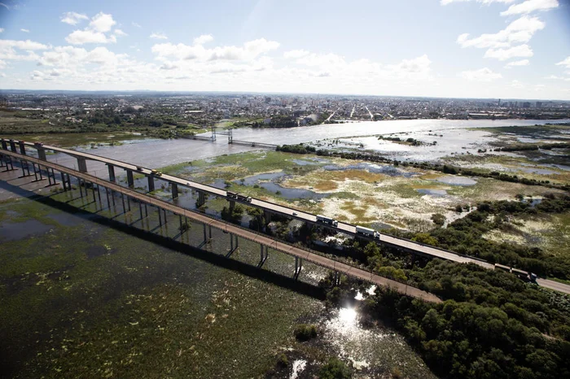

A recuperação da Ponte Alberto Pasqualini , na BR-392 , sobre o canal São Gonçalo, entre Pelotas e Rio Grande, deve avançar nos próximos dias. A informação foi confirmada nesta quinta-feira (26), pelo Departamento Nacional de Infraestrutura de Transportes (Dnit), durante o 2º Seminário de Qualidade da Soja do Porto do Rio Grande.
— Esse contrato com o consórcio vencedor será assinado nas próximas semanas agora. Está bem próxima a assinatura do contrato — afirma o supervisor do Dnit, Vladimir Roberto Casa.
Conforme o órgão, a empresa vencedora é a Arteleste Construções, do Paraná. A obra prevê a reabilitação e o reforço estrutural da ponte, considerada estratégica para a ligação entre os dois municípios e para o escoamento da produção em direção ao Porto do Rio Grande.
O investimento estimado pelo governo federal é de cerca de R$ 126,3 milhões, podendo chegar a aproximadamente R$ 130 milhões conforme atualizações do projeto.
Segundo o Dnit, após a assinatura, o consórcio deverá revisar e atualizar o projeto original, que foi elaborado há mais de uma década. A etapa é necessária para adequação às normas técnicas atuais.
— Durante o ano de 2026, esse consórcio vai fazer uma reavaliação e uma atualização do projeto, que já tem alguns anos. É necessário atualizar, até porque normas rodoviárias foram modificadas nesse período — explica Vladimir Casa.
A expectativa do órgão é de que o projeto revisado esteja concluído até o fim de 2026 ou início de 2027, permitindo o início das obras após a devida autorização.
— A gente tem a expectativa de que até o final do ano, no máximo começo do ano que vem, já esteja com o projeto revisado, aprovado e aptos a iniciar as obras — conclui o supervisor.
A Ponte Alberto Pasqualini, inaugurada em 1962, é um dos principais pontos da BR-392. Desde 1976, uma das estruturas está interditada devido a problemas estruturais, o que faz com que o tráfego opere em pista simples sobre uma segunda ponte.
A situação gera gargalos frequentes e aumenta os riscos à segurança viária, especialmente devido ao alto fluxo de caminhões que circulam diariamente rumo ao Porto do Rio Grande.
Com a recuperação, a expectativa é melhorar a fluidez do trânsito e reduzir os riscos de acidentes em um dos principais corredores logísticos do sul do Estado.
Após a assinatura do contrato e a atualização do projeto, o prazo estimado para execução das obras é de dois anos e meio.
Fique informado sobre o que acontece na região sul do Estado! Siga @gzhzonasul no Instagram e no Facebook, e inscreva-se no canal do WhatsApp para receber notícias em seu celular: gzh.rs/canalgzhzs.